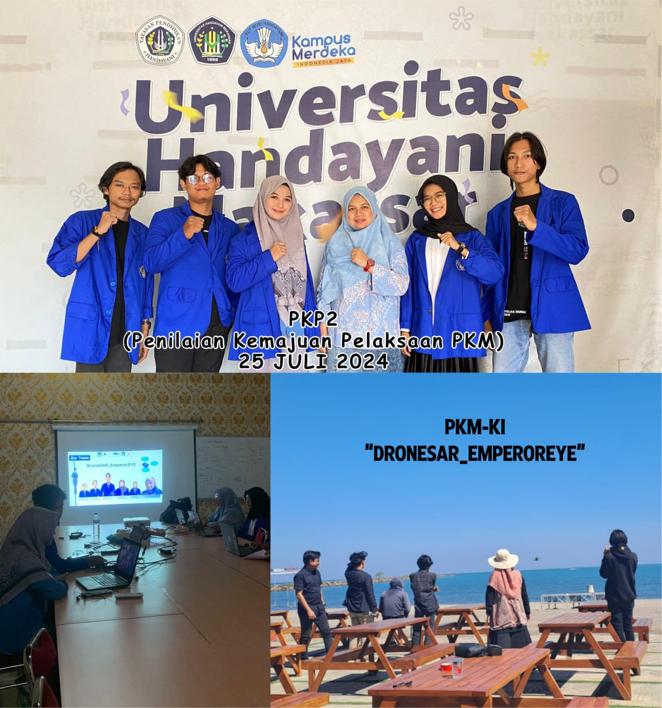

Tim Program Kreativitas Mahasiswa – Karsa Cipta (PKM-KI) dari Universitas Handayani Makassar berhasil mencuri perhatian dalam Forum PKP2 Nasional 2025 dengan karya inovatif mereka bertajuk “DroneSAR_EmperorEYE”. Inovasi ini dirancang untuk mendukung proses pencarian dan penyelamatan (Search and Rescue) di daerah bencana dengan kemampuan drone pengintai berbasis sensor suhu dan citra termal.
“DroneSAR_EmperorEYE” mampu mendeteksi korban di area sulit dijangkau dengan akurasi tinggi. Proyek ini mendapat apresiasi dari para pakar dan dosen pembimbing nasional karena implementasi teknologi yang aplikatif dan relevan terhadap tantangan sosial saat ini.
Ketua tim, Rizal Mahmud, menyampaikan bahwa karya ini merupakan hasil kerja keras lintas program studi, menggabungkan teknik elektro, sistem informasi, dan ilmu komunikasi. “Kami ingin teknologi bisa lebih humanis dan membantu masyarakat dalam kondisi darurat,” katanya.
Rektor Universitas Handayani Makassar juga mengapresiasi pencapaian ini sebagai cerminan kualitas mahasiswa kampus dalam berinovasi dan berkompetisi di level nasional.
← Kembali ke Halaman Informasi